Our team designed and developed a mobile ordering app for Pete's Little Lunchbox, streamlining the confusing and cluttered menu and ordering flow while preserving its signature red branding. We utilized Figma to create and refine prototypes through user testing before bringing the design to life with HTML, CSS, JavaScript, PHP, and a MySQL database. We kept our workflow organized and efficient through Microsoft Teams and FigJam.
Our goal is now to enter the final stages of research and iteration to ensure an intuitive and user friendly experience before developing the final product.
Details
Role: Backend Developer and Data Architecture
My team:
Sreeja Satish - Project Manger and Data Architecture
For the best experience, please view in inspect mode with Iphone XR. Thank you!
Context and Challenge
Background
In a previous course, we were tasked to design a functioning Figma prototype for a food truck app. We took this project further by refining the design and developing a functional and dynamic app through repetitive user research and testing.
Problem
Though Pete's menu initially appeared extensive, it was actually quite small—the illusion of length came from the many customization options displayed at a glance. This presented a unique challenge, as we needed to streamline the menu in a way that maintained its variety without overwhelming users.
Additionally, the business lacked a social media presence or branding beyond the truck itself, which featured a red, white, and black color scheme. This gave us creative freedom but also solidified red as the dominant color in our design. Red proved to be both a challenge and an asset—its bold presence made a strong visual impact, yet required thoughtful application to avoid overwhelming the branding. In the end, it became a defining element of Pete's identity, striking a balance between vibrancy and usability.
Goal and Objectives
Our goals for this project included:
Incorporate a dynamic MySQL database to easily pull menu items information
Seamless PHP integration to simplify and clean repetitive code
Create item detail pages that include customization options in order to simplify the number of repetitive menu items
Incorporate an intuitive and clean navigation system and filtering system
Create a strong brand identity through the use of a mascot and a consistent color scheme
How we will measure sucess:
Our goal is to achieve 90% positive feedback from users as we move from the first user testing to the final user testing. This means ensuring that the web app is intuitive, user-friendly, and meets the needs of our target audience. Additionally, we aim for the web app to function seamlessly, eliminating any bugs or technical issues that could hinder the user experience. By continuously refining the interface, improving performance, and addressing user concerns, we strive to create a polished and reliable product.
Timeline
Although the project lasted for 10 weeks with three main stages—Alpha, Beta, and Final—I primarily focused on backend development, so my personal timeline consisted of three key stages:
Getting Started - In this initial phase, I focused on setting up the worksheet and database, laying the groundwork for data storage and retrieval. This step was crucial in ensuring a structured and scalable foundation for the web app.
Alpha Phase - During this phase, I developed the static pages using only HTML and CSS, translating the Figma prototype into a live webpage. The goal was to accurately bring the visual design to life while maintaining responsiveness and accessibility.
Final Phase (Backend Integration) - This stage involved integrating PHP and SQL into the project, making the web app interactive. I worked on features like handling user input, managing the cart, storing order details, and ensuring seamless database connectivity to create a functional and dynamic user experience.
Process and Insight
Getting started
Before starting the prototype, I collaborated with the team's data architecture to clean and structure Pete's menu in a well-organized spreadsheet. I then built a MySQL database, ensuring all necessary tables were set up for seamless integration into the project. To enhance user experience and minimize redundancy, we streamlined the menu by consolidating similar items. For example, instead of listing 10 separate breakfast sandwiches, we combined them into a single customizable option, allowing users to select their preferred bread, protein, and condiments. This approach made the menu more intuitive and easier to navigate.
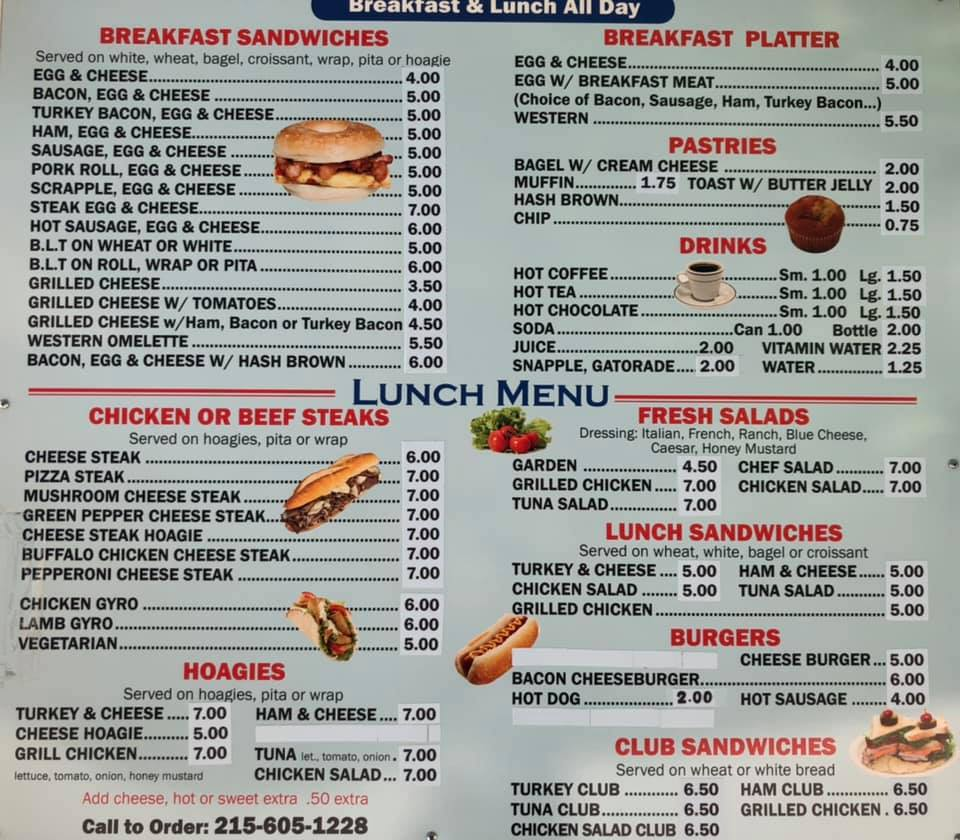
The original menu
With the database in place, I implemented a PHP script to dynamically fetch menu data, ensuring smooth integration with the front end. Using prepared statements for security, the script queries both the main menu tables and customizable ingredient tables based on user-provided GET parameters. The retrieved data is stored in associative arrays, enabling efficient processing and seamless display within the app.
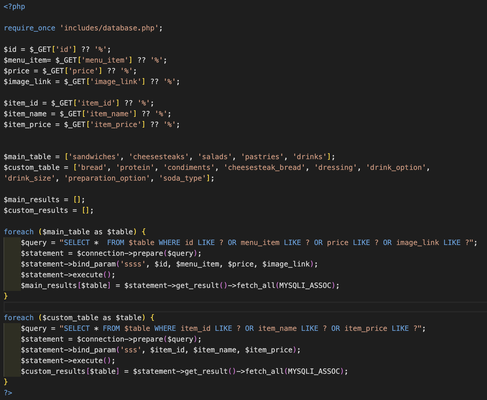
The site below displays all the data (items, price, and images) retrieved from the database.
After setting up the database, I began by developing a static webpage using only HTML and CSS. This phase involved translating the Figma prototype created by the design team into a functional layout. While most interactive features were not yet implemented, this step allowed us to map out the key functionalities and microinteractions we wanted to prioritize as we continued developing the project.
Based on the critical flow of our Figma prototype, I developed the alpha version's flow, which focused on allowing users to place a sandwich order from the menu screen and proceed to checkout.
Final Phase (Backend Integration)
Moving into the beta phase, while the design team conducted user research and refined the interface design based on feedback, I worked on setting up the backend structure of the web app.
Since our design team chose "Continue as Guest" as the primary user flow, I implemented PHP sessions to track guest users and their cart items without requiring an account. When a user selects the guest option, the system assigns a unique guest ID, initializes an empty cart, and sets up an order tracking array. This alows users to browse, add items to their cart, and place orders.
The following PHP script handles guest session setup when a user selects "Continue as Guest":
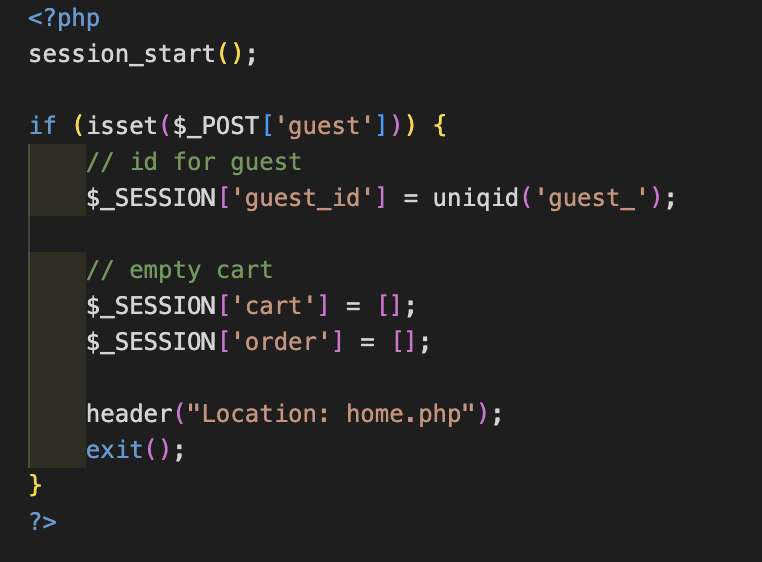
Guest ID Assignment: Generates a unique guest_id when a user enters as a guest.
Cart & Order Setup: Initializes empty arrays to store cart items and track orders.
Adding items to bag
Menu Display
To dynamically display menu items on the menu screen, I implemented a PHP script that retrieves data from the database across multiple categories, including sandwiches, cheesesteaks, salads, pastries, and drinks. A PHP foreach loop iterates through the retrieved results, generating interactive menu elements, each displayed as a clickable link that directs users to its detailed page.
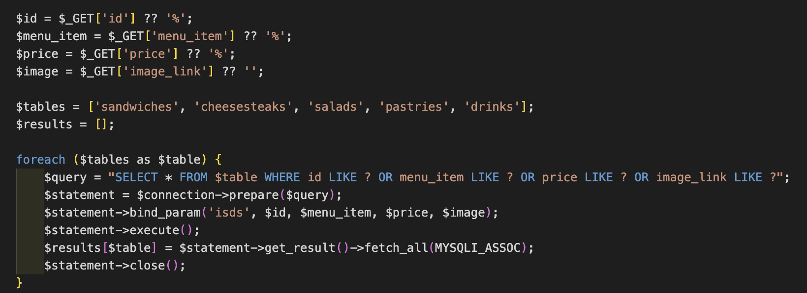
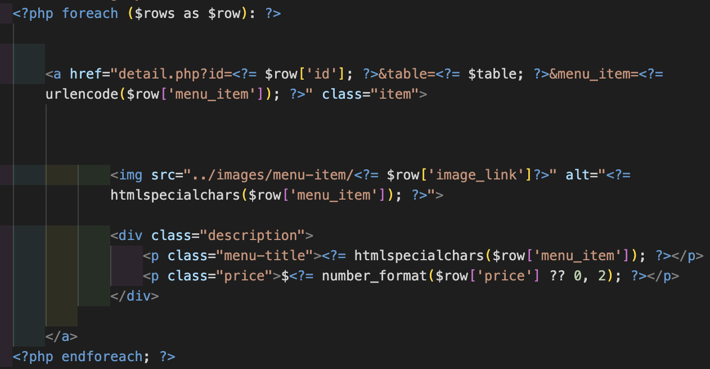
Each menu item is assigned a unique ID and an associated table name, which are passed as URL parameters. Using PHP, I extract these values and query the database to fetch the corresponding item details.
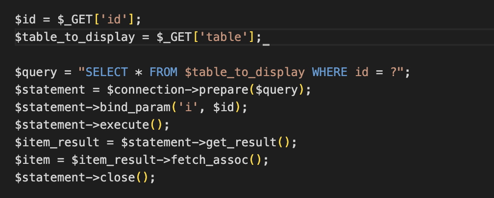
Conditional Customization Display
To efficiently manage customization options, I created a table map linking main menu tables to their respective customization tables. This allows PHP to dynamically retrieve relevant customization options based on the item's table and ID, ensuring that users only see applicable choices.
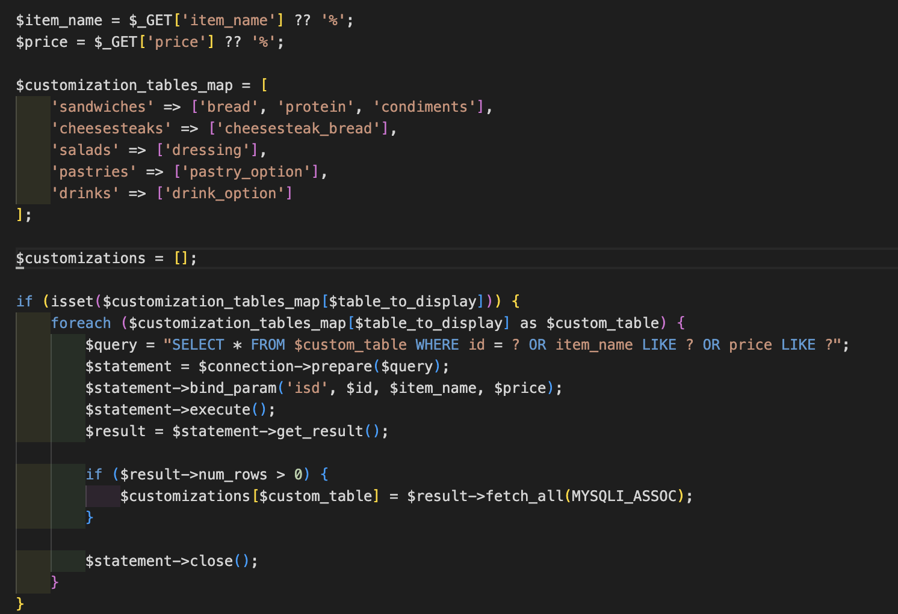
I also used conditional logic to determine whether customization options appear as checkboxes (for multi-select items like proteins and condiments) or radio buttons (for single-choice options like bread type).
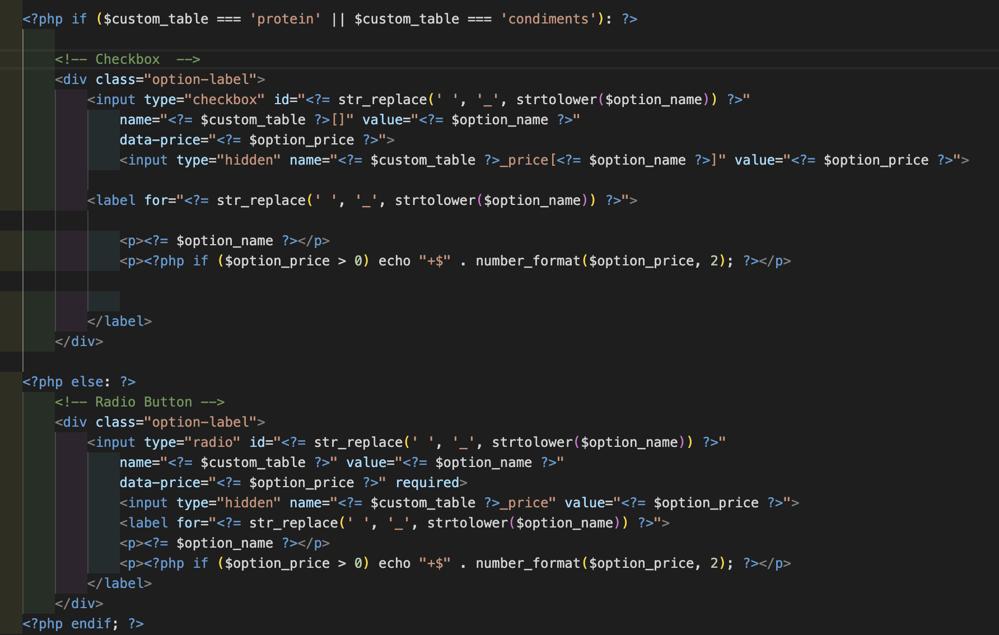
Item Detail Screen and Customization Form
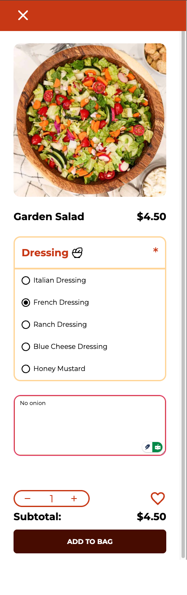
Garden salad on detail screen with French Dressing custom option
Each item detail page displays its image, title, price, and customization options. To allow users to select customizations, adjust quantity, and favorite an item, I created a form that captures all selections. Hidden input fields store essential data, ensuring smooth transfer to the cart for a seamless ordering experience.
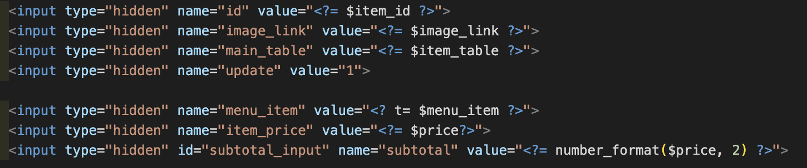
Real-Time Subtotal and Quantity Adjustment
The subtotal section dynamically updates using JavaScript whenever users select customization options or change the quantity. The script calculates the total by summing the base price and any additional customization costs, then multiplies it by the selected quantity. This ensures that the displayed price instantly reflects any changes. The updated subtotal is sent to the cart when the user clicks the "Add to Bag" button.
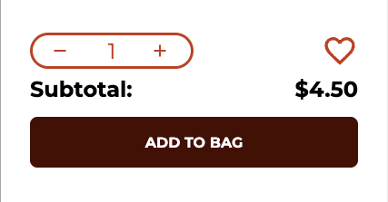
Subtotal shows at the end of item detial screen
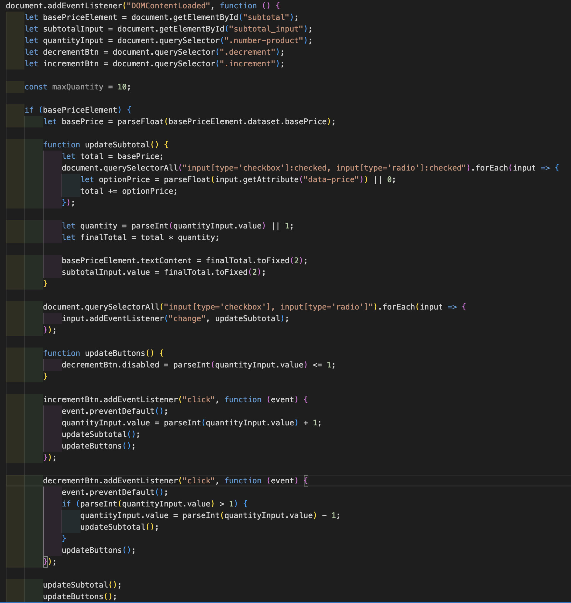
Javascript use to recalculate the subtotal
Add item to bag
Once users finalize their customizations, they can click the "Add to Bag" button, which sends all selected options to the bag. In the bag, the title, image, subtotal, and chosen customizations are displayed, ensuring users can review their selections before checkout.
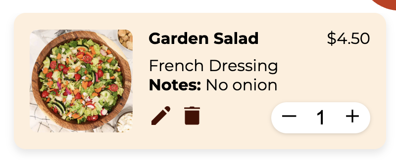
Item display when added to bag
To handle the "Add to Bag" functionality, I used the POST method to retrieve form data, ensuring all selected options are properly captured. The script extracts key details such as the item ID, main table, image, menu item name, price, subtotal, notes, and quantity. It also processes customization options, differentiating between checkbox selections (multiple choices) and radio button selections (single choice) while filtering out unnecessary values. This structured approach ensures accurate data transfer to the bag for users to review their order.
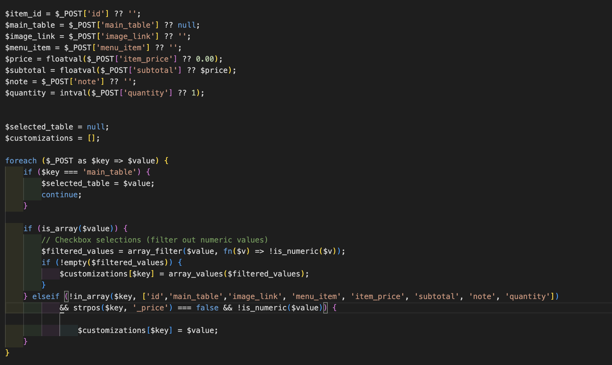
To efficiently manage the cart, I implemented logic to check if an item with the same ID, table, menu item, customizations, and notes already exists in the cart. If found, it simply increases the quantity and updates the subtotal. Otherwise, the item is added as a new entry. Customizations are sorted for consistency, ensuring that variations in selection order don't create duplicate entries. This approach keeps the cart organized and prevents unnecessary duplicates.
This is also where I initialize the data stored in $_SESSION['cart'] , ensuring that each item includes essential details such as id, table name, title, price, quantity, subtotal, and selected customizations. This structured approach allows for efficient retrieval, modification, and display of cart items throughout the web app.
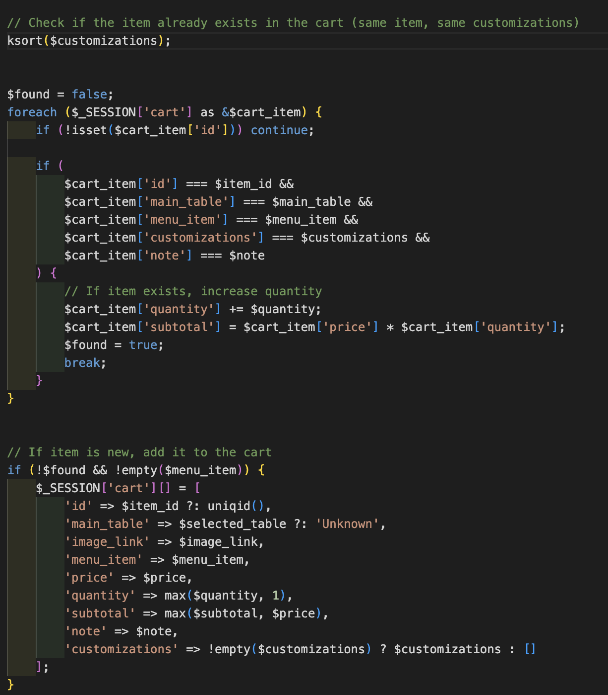
To ensure the subtotal is calculated correctly, I use the array_sum function combined with array_column , which extracts the subtotal values from all cart items in $_SESSION['cart'] and sums them up. This ensures the total displayed in the cart dynamically reflects all selected items and their quantities. The result is formatted using number_format for a consistent currency display.
Editing Item In Bag
Edit and update item in cart
Each item added to $_SESSION['cart'] (which is cart) is assigned a unique index number, storing all relevant data, including the table name, title, price, and selected customizations. To allow users to modify their selections, I added an edit button that links to the item's edit screen, passing its index number in the URL.
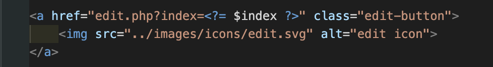
To handle the editing process, I created an edit.php file that retrieves the item details from the cart using the index number passed in the URL. The script fetches the item data from the session and pre-fills the form with the current selections, allowing users to modify their choices.
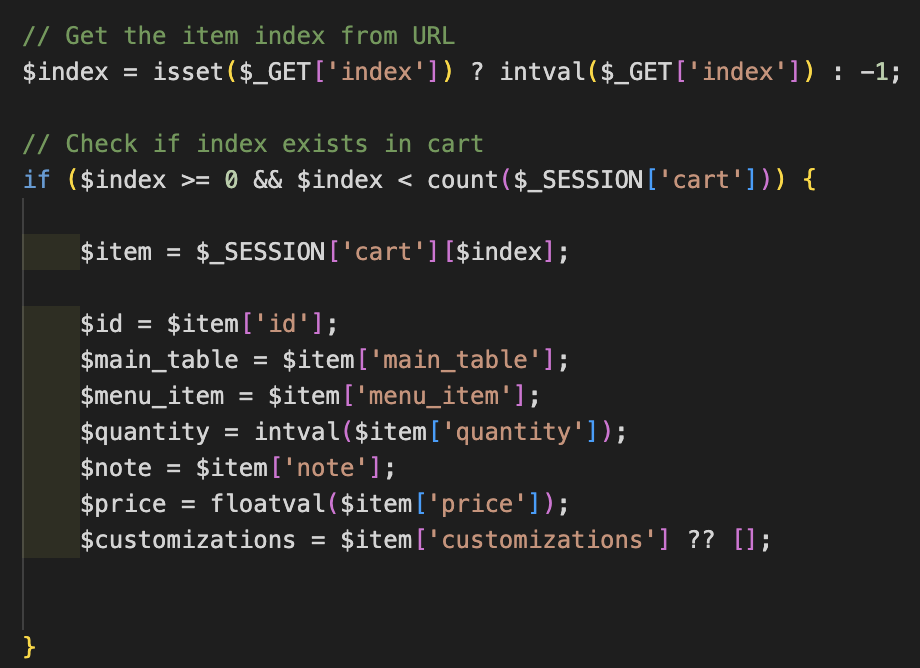
Getting item index from the URL and retrieving the data from the $_SESSION['cart'] with that item
When users finalize their updates and click the Update button, their changes are sent to update_cart.php, where the script processes the request efficiently. First, it validates that the cart exists in the session and ensures that the submitted item index is valid. It then retrieves the updated data, including quantity, notes, and customizations, while preserving the existing structure and filtering out unnecessary price-related keys. To prevent duplicate entries, the script checks if another item in the cart has the same item ID, table, name, and customizations. If a match is found, it merges the quantities and recalculates the subtotal instead of adding a duplicate item. Once the updates are applied, the script ensures that the item's data is correctly stored in $_SESSION['cart']. If a duplicate was merged, the original entry is removed, and the array is re-indexed for consistency. Finally, the user is redirected back to the cart page (bag.php), ensuring a smooth and organized update process.
Removing Items From Bag
Removing Items
Deleting Item Individually
For the Delete Item functionality, I created a form that sends the item's index to remove_item.php when the user clicks the delete button. The remove_item.php script runs entirely on the backend to ensure a seamless user experience. It first verifies that the session is active and checks if the index value exists in the request. If a valid index is provided, the corresponding item is removed from $_SESSION['cart']. To maintain a structured cart, the array is re-indexed using array_values(), ensuring no gaps in the item list. Since this process happens in the background, the user remains unaware of the backend operation, experiencing only the immediate removal of the item from their cart upon interaction. After the item is deleted, the user is redirected back to the cart page (bag.php), maintaining a smooth and uninterrupted shopping experience.
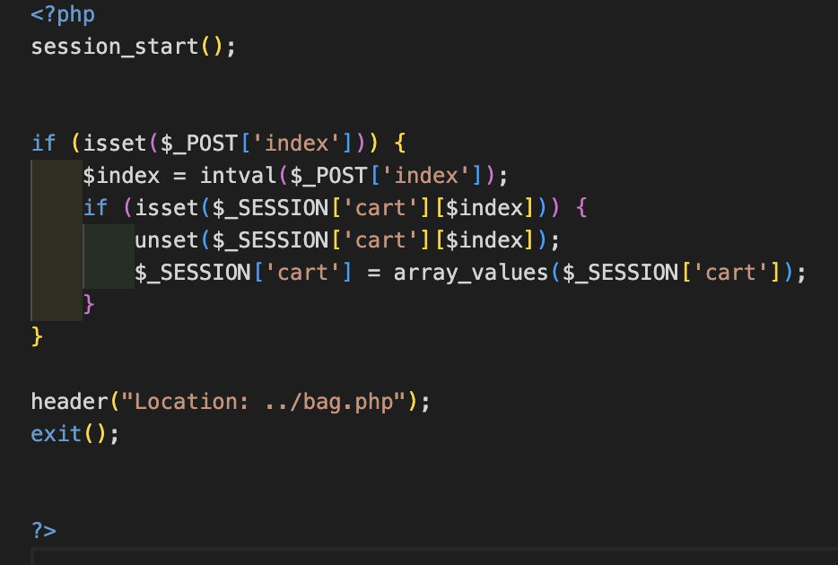
Clear Bag
To allow users to clear their entire cart, I implemented a simple reset function using unset($_SESSION['cart']). When the user clicks the "Clear Bag" button, the request is sent to a backend script that starts the session and removes the cart data from $_SESSION. This instantly resets the cart to an empty state.
Empty Bag State
To enhance user experience, I implemented a conditional check on $_SESSION['cart'] . If the cart is empty, the page displays a message: "Oh No! Your Bag is Empty" along with an empty bag icon and a "View Menu" button, encouraging users to browse the menu.
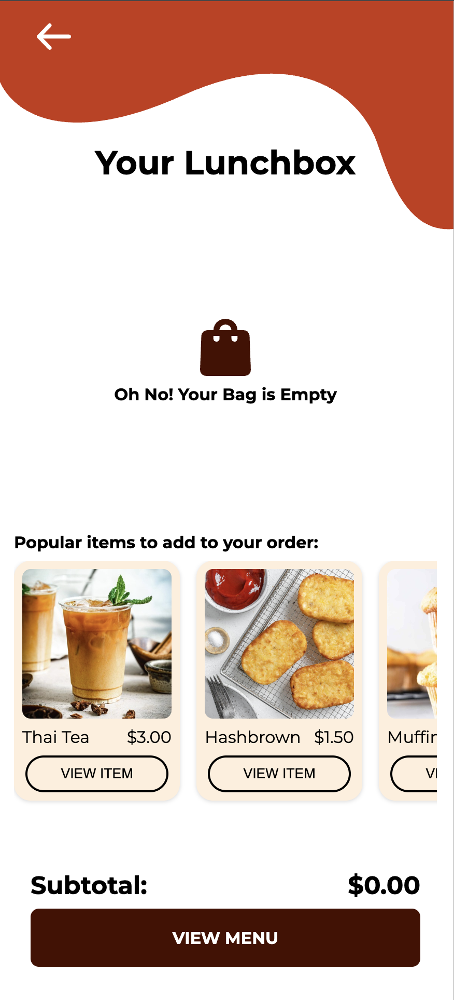
Empty Bag
If there are items in the cart, the screen dynamically displays each food item in a structured layout, showing the item image, title, price, quantity, customizations, and notes.
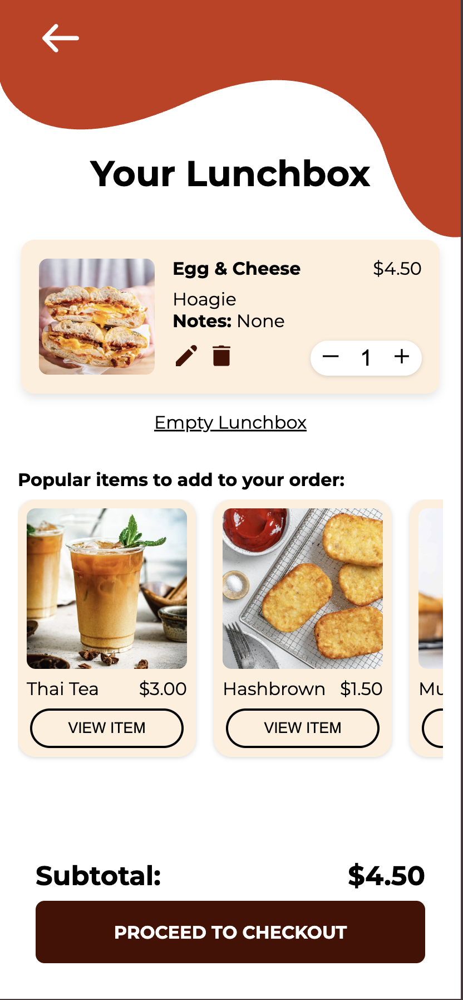
Bag with Item
Placing Order
The next part of the web app focuses on the checkout process, where users can finalize their order by selecting payment method, pickup time and tips.
Payment Method
The payment method selection is an essential step, implemented using JavaScript to dynamically update the UI based on user choices. When users click on the "Choose Payment" box, they are directed to the payment selection screen, where they can choose from Google Pay, Apple Pay, Venmo, or Cash on Pickup. The script listens for the selection, stores the choice using localStorage.setItem() , and then updates the UI accordingly.
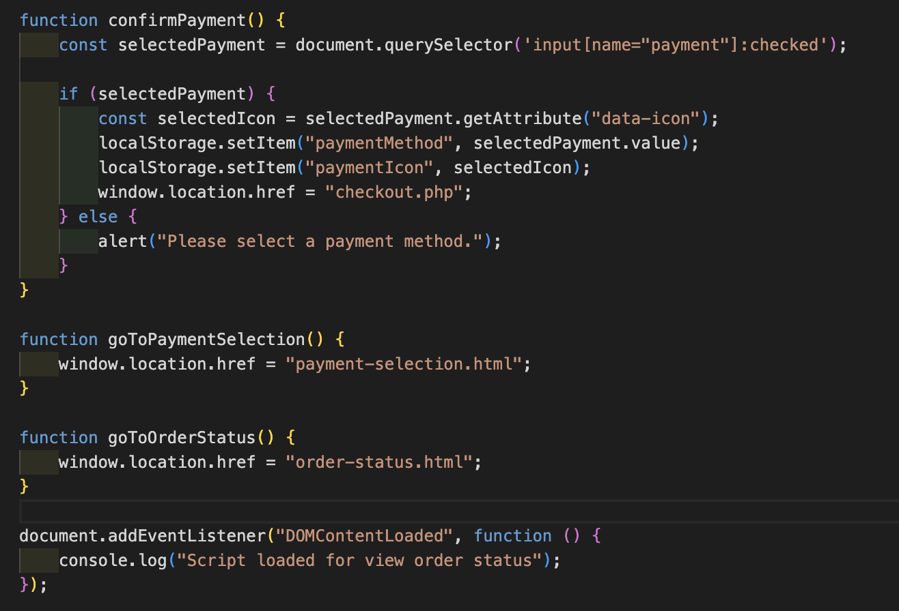
When the page loads, the script retrieves the stored payment method and its corresponding icon from localStorage and updates the .choose-payment container dynamically. If a payment method is selected, the interface replaces the default display with the selected option's icon using innerHTML.
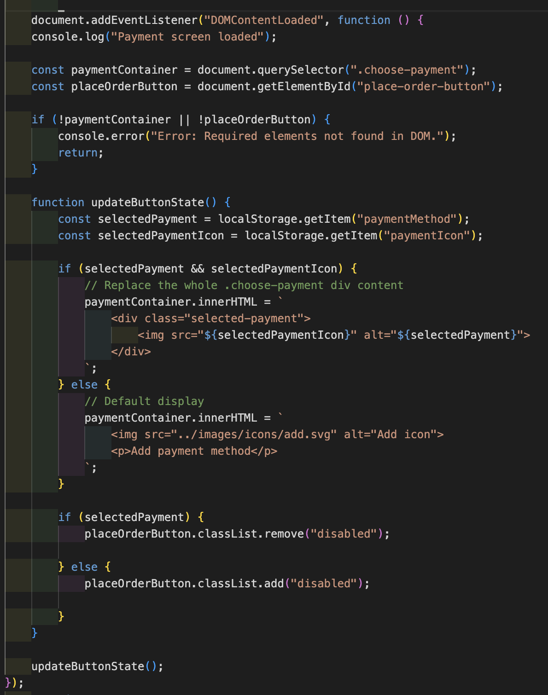
Pickup time and tips
In addition to selecting a payment method, users can customize their pickup time and tip amount before finalizing their order. By default, the system sets the pickup time to "Pickup ASAP" and the tip amount to "No Tip" to ensure a quick and frictionless checkout experience. However, users have the flexibility to change these settings through a simple selection form.
Generate order number and transfer from cart to order
When setting up the order confirmation process, I made sure that once the user clicks "Place Order", the screen redirects to the confirmation page, where an order number is generated dynamically. To keep the order numbers sequential and prevent them from getting too large, I implemented a reset mechanism—if the order number exceeds 999, it resets back to 1.
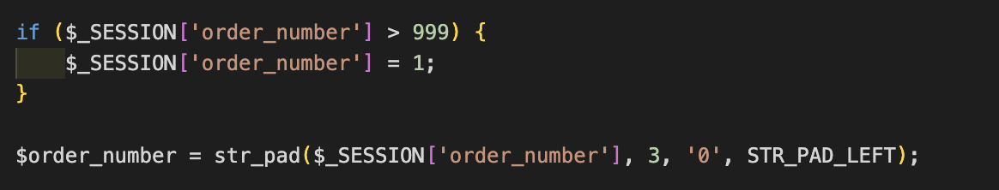
At this stage, I wanted to transfer the cart details into a dedicated session for the order summary. To achieve this, I created a new $_SESSION['order'] array that stores the order number, items, subtotal, total price, tax, tip, and pickup time. The pickup time defaults to "ASAP" unless the user selects a specific time. I also reset the $_SESSION['cart'] after transferring the data to the order session. This ensures that when the user returns to the menu, they can add new items without any interference from their previous order.
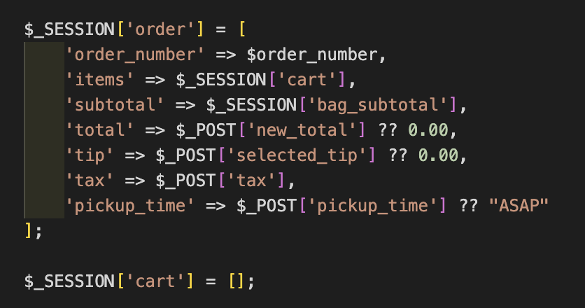
Viewing order status
On the Order Status page, I retrieve the order details from $_SESSION['order'] and display them to the user. This includes the order number, list of ordered items, subtotal, tax, tip, total price, and pickup time. Pulling this information directly from the session ensures the user sees the most up-to-date details of their order without requiring additional database queries.
To extract the order details, I use the null coalescing operator (??) to provide default values if any data is missing:
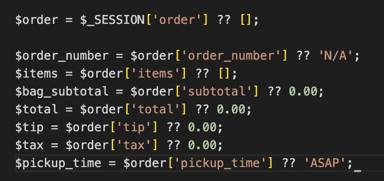
Each item in the order contains key details such as the item ID, image link, name, price, quantity, subtotal, customizations, and notes. This makes it possible to display an accurate order summary on the page:
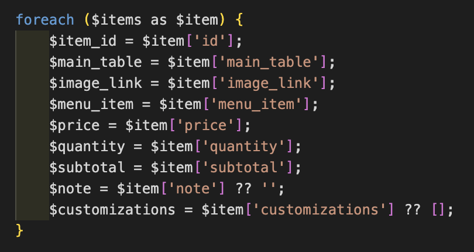
I added a simple animation to notify the user when their order is ready for pickup. When the order is marked as ready, the completion icon gradually becomes fully visible by changing its opacity, creating a smooth transition. Additionally, the pickup time dynamically updates to "Now," and a message appears indicating that the order is ready for pickup. This small interaction enhances the user experience by providing a clear and visually engaging confirmation.
Solution
Final version runthrough
For this project, our team designed and developed a seamless online ordering experience with a user-friendly interface and smooth interactions. The web app allows users to browse the menu, customize their orders, and proceed through checkout with ease. Below are the key design and development highlights that define the final product:
User Experience & Navigation
The navigation structure is intuitive, ensuring users can smoothly transition between menu selection, cart review, and checkout. The shopping bag dynamically updates, reflecting real-time changes when items are added, removed, or modified. If the cart is empty, the screen displays a friendly message with a call-to-action button leading users back to the menu.
Checkout Process
Users can finalize their order by selecting a payment method, pickup time, and tip amount. The default settings ensure a quick ordering process, with pickup set to "ASAP" and no tip selected. These preferences are stored in localStorage, allowing users to revisit the checkout page without losing their selections.
The payment method selection provides multiple options such as Google Pay, Apple Pay, Venmo, or cash on pickup. The UI updates dynamically based on the user's selection, ensuring a smooth checkout experience.
Order Confirmation & Status Updates
Once the order is placed, the web app generates a unique order number and transfers the cart data into the order session. This ensures that past orders do not interfere with new ones, keeping the system organized. The Order Status page retrieves all order details and visually displays them to the user.
To enhance the experience, I incorporated a small animation indicating when the order is ready. The completion icon fades in, the pickup time updates to "Now," and a message informs users that their order is ready for pickup. This subtle interaction provides real-time feedback and improves usability.
Performance & Seamless Backend Integration
Throughout development, I ensured smooth backend functionality using PHP and SQL for data handling. By utilizing session storage, I eliminated unnecessary database queries, making the web app more efficient. Users experience a seamless, bug-free interface with fast-loading pages and dynamic interactions.
The project was a success, achieving our goal of creating a streamlined, intuitive, and user-friendly ordering experience for Pete's Little Lunchbox. Through repetitive user testing and iteration, we refined the interface and functionality, ensuring a smooth ordering flow from menu selection to checkout.
Sucess Metrics
90% Positive User Feedback:
Throughout multiple rounds of testing, users reported significant improvements in the ordering experience. The final version successfully eliminated confusion from the original cluttered menu layout, making it easier to navigate and customize orders.
Seamless Backend & Database Integration:
By incorporating a dynamic MySQL database, we enabled real-time menu updates and streamlined data retrieval. The integration of PHP helped clean and simplify repetitive code, making the system more efficient.
Effortless Order Process & Checkout:
Users could easily select customizations, payment methods, pickup times, and tips without encountering roadblocks. The app dynamically updated totals and order details, reducing friction in the checkout process.
Polished Visual & Brand Identity:
Our use of red branding, a mascot, and a clean UI created a cohesive and recognizable identity for Pete's Little Lunchbox. The final design struck the right balance between boldness and usability.